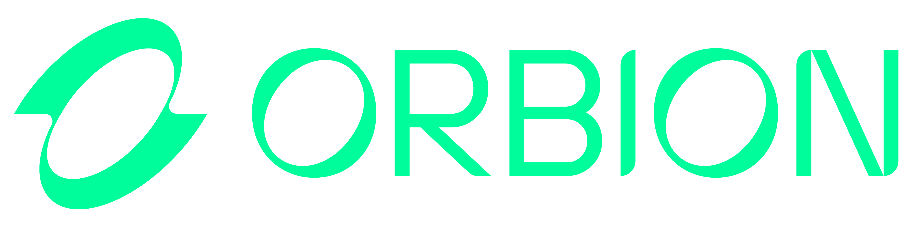

Uma ligação em 7 etapas que vende para quem já conhece a sua empresa e ainda traz novas indicações.
Quando as vendas caem, a primeira ideia de quase todo empresário é comprar mais lead. Mais anúncio, mais tráfego, mais gente entrando no funil.
Só que dentro da sua empresa já existe uma lista de pessoas que levantaram a mão em algum momento. Pediram orçamento, chamaram no WhatsApp, participaram de uma reunião ou compraram uma vez. Depois a conversa esfriou e ninguém ligou de novo.
Essas pessoas já conhecem a sua marca. Falar com elas custa bem menos do que conquistar alguém do zero. Mesmo assim, na maioria das empresas essa lista fica esquecida numa planilha ou no CRM.
Exemplo: 500 leads × 3% × R$ 2.000 = R$ 30.000 que podem estar esperando uma ligação.
Os 3% do exemplo são só uma referência. Use a porcentagem que faça sentido para o seu mercado e, na dúvida, escolha uma mais baixa.
Leia o mapa da próxima página. Cada etapa tem uma função, e saber o porquê de cada uma ajuda o vendedor a não se perder quando a conversa sai do roteiro.
Preencha a folha de adaptação (páginas 15 e 16). Todo texto que aparece [ASSIM] no script precisa ser trocado pela realidade do seu negócio.
Ensaie com o time, faça as ligações e anote os resultados no painel da página 17. Ajuste o script olhando os números.
Escolha uma ou duas pessoas do time para tocar a campanha. O dono acompanha pelos números do painel da página 17. Comece pelos leads que falaram com a empresa há menos tempo.
Tente cada lead até 3 vezes, em dias e horários diferentes, e mande uma mensagem no WhatsApp quando ele não atender. Quem disser não volta para a base com o motivo anotado. Quem pedir para não receber mais contato sai da lista na hora.
A ligação tem três momentos. Primeiro você abre a conversa e prepara o terreno. Depois apresenta a solução e fecha. No fim, transforma um cliente novo em vários contatos novos.
Script copiado sem adaptação costuma dar errado. Cada empresa tem um cliente, um jeito de falar e um preço. Use este roteiro como esqueleto e coloque a realidade do seu negócio dentro dele.
As respostas do lead que aparecem aqui mostram o caminho ideal. Na vida real ele vai fugir do roteiro. Quando isso acontecer, escute, responda com calma e volte para a próxima pergunta da etapa.
Algumas falas usam palavras como “técnicas”, “conteúdo” e “acesso”. Troque pelo que o seu cliente compra de verdade. Se a sua venda fecha com proposta ou reunião, adapte o combinado da etapa 3 e o fechamento da etapa 5 para marcar esse passo com dia e hora.
Objetivo: quebrar o gelo e lembrar o lead de onde ele conhece a empresa.
Fala, (NOME), aqui é o (SEU NOME). Joia?
Tudo bem. (SEU NOME) de onde?
(NOME), a gente ainda não se conhece, mas faço parte da [NOME DA EMPRESA].
Somos uma empresa especializada em [SUA ÁREA DE ATUAÇÃO] e você já teve algum contato com a gente há algum tempo, então eu resolvi te ligar.
A gente está fazendo uma campanha agora focada em [PÚBLICO QUE VOCÊ QUER ATINGIR] e, por isso, eu lembrei de você.
Hoje você trabalha com [SUA ÁREA DE ATUAÇÃO], tem um negócio relacionado a isso? Me fala melhor.
Sim, hoje eu trabalho com [EXEMPLO DE ATUAÇÃO DO CLIENTE].
Que massa.
E como está sua performance hoje em relação a [PRINCIPAL RESULTADO QUE SEU PRODUTO AJUDA A MELHORAR]?
Está boa, mas eu sei que ainda tenho bastante coisa para melhorar.
Use essa abertura só com quem realmente já teve contato com a empresa. Se tiver o histórico, seja específico: “você pediu um orçamento com a gente em março”. Isso mostra que a ligação tem motivo e faz o lead baixar a guarda.
Fale o nome da pessoa logo no começo e mantenha o tom leve, como quem liga para um conhecido. Os primeiros segundos decidem se o lead vai conversar ou desligar.
Objetivo: fazer o lead contar, com as palavras dele, o que hoje não está bom.
E desenvolver novas técnicas para [RESULTADO QUE SEU PRODUTO AJUDA A GERAR], ou até aprimorar aquilo que você já faz bem hoje, te ajudaria com o quê?
Principalmente a [RESULTADO QUE O CLIENTE DESEJA]. Sinto que ainda perco algumas oportunidades.
Já aconteceu de você [SITUAÇÃO COMUM QUE SEU CLIENTE VIVE] e depois pensar que, se tivesse feito alguma coisa diferente, talvez o resultado pudesse ter sido melhor?
Já, com certeza.
Pois é.
Às vezes um insight, uma técnica ou uma forma diferente de conduzir aquela situação muda completamente o resultado.
E hoje, o que você está fazendo para melhorar sua performance em [RESULTADO OU COMPETÊNCIA QUE VOCÊ DESENVOLVE]?
Vejo alguns conteúdos, sigo algumas pessoas, mas nada muito estruturado.
Entendi.
Então você até busca conteúdo, mas hoje não tem algo estruturado para desenvolver novas técnicas e melhorar aquilo que já faz.
Exatamente.
Então deixa eu te explicar melhor o motivo da minha ligação, porque pelo que você está me falando acredito que faça bastante sentido.
Mas antes eu quero fazer um combinado rápido com você.
Anote as palavras exatas que o lead usar. Se ele disser “sinto que ainda perco algumas oportunidades”, é essa frase que você vai repetir na etapa 4. Gente compra quando escuta a própria dor sendo descrita.
Depois de cada pergunta, fique em silêncio e deixe a pessoa falar. Quanto mais ela fala aqui, mais fácil fica o fechamento.
A pergunta da “situação comum” é a mais importante da etapa. Escolha uma cena que o seu cliente vive de verdade, como perder uma oportunidade que parecia certa, gastar com algo que não deu resultado ou deixar um problema crescer por falta de tempo.
Objetivo: combinar que, no fim, o lead vai dizer um sim ou um não claro.
Hoje é você mesmo que toma suas decisões e investe em [TIPO DE INVESTIMENTO RELACIONADO AO SEU PRODUTO] ou precisa conversar com alguém antes?
Eu mesmo decido.
Perfeito.
Então vamos fazer um combinado.
Se eu te apresentar [NOME DO PRODUTO] e você entender que não faz sentido para você ou que não quer investir nisso agora, você simplesmente me fala NÃO no final.
Combinado?
Combinado.
Agora, se você gostar do que eu te apresentar, entender que isso pode ajudar você a [PRINCIPAL TRANSFORMAÇÃO DO PRODUTO] e o investimento encaixar para você, a gente já finaliza aqui nessa ligação.
Pode ser?
Pode.
Eu faço esse combinado porque você já sabe como as pessoas são quando precisam dizer não, né?
Começa aquele negócio de “vou pensar”, “depois te respondo”, “vou olhar com calma”...
É verdade.
Então pode ser totalmente objetivo comigo.
Se for não, você fala não.
Se fizer sentido, a gente resolve aqui.
Posso contar com sua objetividade?
Pode.
Então fechado.
Por que combinar antes de mostrar o produto? Porque depois que o preço aparece, fica difícil para o lead dizer um não claro. Ele foge para o “vou pensar” e some. Com o combinado feito antes, o lead fica à vontade para dizer sim ou não na hora.
Se o lead disser que precisa falar com alguém (sócio, cônjuge, financeiro), pare aqui. Marque uma nova conversa com todos que decidem juntos. Apresentar para quem não decide gera retrabalho.
Objetivo: mostrar autoridade e ligar o produto à dor que o lead contou.
(NOME), a [NOME DA EMPRESA] trabalha diretamente com [SUA ÁREA DE ATUAÇÃO] e ajuda [PÚBLICO QUE VOCÊ ATENDE] a [PRINCIPAL RESULTADO GERADO].
E foi justamente vivendo o dia a dia de [PROBLEMA OU MERCADO EM QUE VOCÊ ATUA] que a gente criou [NOME DO PRODUTO].
O método que existe por trás da nossa empresa carrega [TEMPO DE EXPERIÊNCIA] de experiência prática em [SUA ESPECIALIDADE].
[NOME DA PRINCIPAL AUTORIDADE DA EMPRESA], [CARGO OU PAPEL NA EMPRESA], já [PRINCIPAL FATO DE AUTORIDADE].
Ao longo dessa trajetória, já [NÚMERO OU PROVA DE AUTORIDADE 1] e nosso método já esteve envolvido em [NÚMERO OU PROVA DE AUTORIDADE 2].
Então tudo o que você vai encontrar dentro de [NOME DO PRODUTO] nasceu de [EXPERIÊNCIA PRÁTICA RELEVANTE], de aplicação real e de situações que a gente já viveu dentro de [CONTEXTO EM QUE O MÉTODO FOI APLICADO].
Entendi.
E foi justamente para transformar toda essa experiência em algo que mais pessoas pudessem acessar que a gente criou [NOME DO PRODUTO].
[NOME DO PRODUTO] é [EXPLIQUE EM UMA FRASE SIMPLES O QUE É O PRODUTO].
Lá dentro você encontra [PRINCIPAIS ENTREGAS OU CONTEÚDOS DO PRODUTO].
E o objetivo é ajudar você a [PRINCIPAL TRANSFORMAÇÃO].
É fazer você ter mais [GANHO 1], mais [GANHO 2] e principalmente mais alternativas quando estiver enfrentando [PRINCIPAL DOR QUE SEU PRODUTO RESOLVE].
Por exemplo, você mesmo acabou de me falar que já [RETOME A SITUAÇÃO QUE O CLIENTE CONTOU NA CONEXÃO].
Sim.
Use só provas reais. Se a empresa é nova, conte a experiência do fundador ou o resultado de um cliente. Prefira um número pequeno e verdadeiro. Quando o número parece bom demais, o lead desconfia.
O momento mais forte desta etapa é quando você retoma a situação que o lead contou na etapa 2. Use as palavras dele.
Então imagina você ter acesso a algo que te ajuda justamente a [AÇÃO QUE O PRODUTO ENSINA OU ENTREGA], entender novas formas de [HABILIDADE OU RESULTADO 1], melhorar [HABILIDADE OU RESULTADO 2] e aplicar isso diretamente no seu dia a dia.
É isso que [NOME DO PRODUTO] entrega.
Faz sentido para você?
Faz.
E tem uma coisa importante.
Como eu te disse no começo, a gente está fazendo uma campanha com algumas pessoas da nossa base.
Então, pela campanha de incentivo, eu consigo colocar para você um bônus que normalmente não acompanha [NOME DO PRODUTO].
Você recebe [EXPLIQUE O BÔNUS E COMO ELE FUNCIONA].
Ou seja, além de [NOME DO PRODUTO], você também vai ter [EXPLIQUE O BENEFÍCIO PRÁTICO DO BÔNUS].
Legal. Isso é interessante.
Exatamente.
Mas o principal continua sendo [NOME DO PRODUTO].
Porque é ele que vai te ajudar de forma contínua a [BENEFÍCIO PRINCIPAL DO PRODUTO].
O bônus entra justamente para acelerar esse começo e ajudar você a [RESULTADO QUE O BÔNUS ACELERA].
Até aqui, é algo que você acredita que usaria?
Sim, com certeza.
Então vamos falar do investimento.
Se o valor encaixar, você está disposto a se tornar nosso cliente?
Sim.
O bônus precisa ser real e ter prazo. Um bônus que existe o ano inteiro perde a força e o time perde a credibilidade. Defina com a gestão o que entra na campanha e até quando.
As perguntas “faz sentido para você?” e “é algo que você acredita que usaria?” fazem o lead dizer pequenos sins pelo caminho. Se a resposta vier fraca, volte para a dor da etapa 2 antes de falar de preço.
Objetivo: mostrar quanto a solução vale, falar o preço, fechar e oferecer um adicional.
(NOME), quando você olha para uma solução que te ajuda a [PRINCIPAL RESULTADO], entrega [PRINCIPAIS ENTREGAS] e ainda te dá acesso a [DIFERENCIAL PRINCIPAL], você tem ideia de quanto normalmente custaria um investimento desse no mercado?
Não, eu não cheguei a pesquisar.
Sem problemas, (NOME).
Uma solução como essa poderia tranquilamente estar posicionada em [VALOR DE REFERÊNCIA OU ÂNCORA].
E ainda teria [BÔNUS OU ENTREGA ADICIONAL], que poderia representar mais [VALOR PERCEBIDO DO BÔNUS].
Só que dentro dessa campanha a condição é bem diferente.
Para você ter acesso a [NOME DO PRODUTO], você vai pagar hoje com a gente [VALOR DA OFERTA].
[VALOR DA OFERTA] encaixa no seu financeiro?
Sim, encaixa.
Perfeito.
Hoje você usa Visa ou Mastercard?
Visa.
Perfeito.
Então vamos fazer assim.
Eu consigo te mandar o link e você mesmo preenche aí comigo na linha para eu liberar [O QUE SERÁ LIBERADO APÓS A COMPRA].
Ou, se preferir, eu faço por aqui porque já está tudo aberto para mim e se torna mais rápido.
Como prefere?
Pode mandar que eu preencho.
Use um valor de referência verdadeiro, como o preço cheio do produto ou o preço de soluções parecidas no mercado. Depois fale o preço da campanha uma vez, com calma, e espere a resposta em silêncio.
“Visa ou Mastercard?” é uma pergunta de escolha: as duas respostas levam ao fechamento. Prefira sempre mandar o link para o próprio cliente preencher. Se ele pedir para você fazer, digite direto na tela de pagamento e nunca anote os dados do cartão.
Perfeito.
Antes de eu te mandar, consigo adicionar uma condição aqui também.
Por mais [VALOR DA OFERTA ADICIONAL], você recebe [O QUE O CLIENTE RECEBE A MAIS].
Ou seja, além de [PRODUTO PRINCIPAL], você também consegue [BENEFÍCIO PRÁTICO DA OFERTA ADICIONAL].
Posso adicionar aqui para você?
Pode adicionar.
Perfeito.
Então vou colocar [NOME DA OFERTA ADICIONAL] também e já te mando o link com tudo certo.
Confere para mim se chegou.
Chegou.
Pode preencher aí que, enquanto isso, eu vou preparando [ACESSOS, LINKS, CADASTRO OU PRÓXIMA ETAPA DA ENTREGA].
Terminou de preencher?
Terminei.
Deixa eu confirmar aqui.
Aprovado.
(NOME), parabéns pela decisão.
De verdade.
Agora você faz parte de [NOME DO PRODUTO] e eu vou liberar [PRÓXIMO PASSO DA ENTREGA].
A oferta adicional entra logo depois do sim, quando o cliente já decidiu. Ofereça algo que combine com o que ele acabou de comprar e que deixe o resultado mais rápido ou mais fácil.
Fique na linha enquanto ele paga. Desligar antes do “aprovado” abre espaço para a dúvida voltar.
Para consumidor final, a compra por telefone pode ser cancelada em até 7 dias (art. 49 do Código de Defesa do Consumidor). Feche só quando o lead tiver entendido o que está comprando.
“Vou pensar.” Retome o combinado com leveza: “Lá no começo a gente combinou um sim ou um não. O que ficou em dúvida: o produto, o momento ou o valor?” Resolva essa dúvida ou aceite o não.
“Tá caro.” Pergunte com calma: “Caro comparado com o quê?”. Depois volte para a dor que ele contou na etapa 2. Desconto só com aprovação da gestão, definida antes da campanha.
Objetivo: pedir indicações enquanto o cliente está animado com a compra.
(NOME), inclusive, deixa eu te perguntar uma coisa.
Você gostou da oportunidade?
Gostei.
Gostou de [NOME DO PRODUTO]?
Gostei.
E gostou do meu atendimento?
Gostei sim.
Bacana.
Já que você gostou do nosso atendimento e da oportunidade, vamos abrir isso para algumas pessoas próximas de você também.
Eu te mandei uma mensagem no WhatsApp.
Confere aí para mim se chegou.
Chegou.
Seu celular é iPhone ou Android?
iPhone.
Então clica no sinal de mais do lado da nossa conversa.
Agora clica em contato.
Apareceu sua agenda?
Apareceu.
Perfeito.
Agora você vai selecionar [QUANTIDADE DE PESSOAS QUE DESEJA RECEBER COMO INDICAÇÃO].
Não precisa medir interesse e nem perguntar para ninguém antes.
A ideia é simplesmente você lembrar de pessoas e eu mesmo vejo com elas se faz sentido ou não.
Seleciona amigos seus que [DESCREVA OS PERFIS QUE NORMALMENTE SE BENEFICIAM DO SEU PRODUTO].
Pessoas que você acredita que vale a pena eu conversar e apresentar a mesma oportunidade.
Seleciona de A a Z, que aí você não precisa lembrar de cabeça. É só ir rolando para baixo.
Beleza. Estou selecionando.
Pode selecionar tranquilo.
Pronto. Selecionei.
Pode me enviar.
Enviei.
Peça indicação logo depois do “aprovado”. É o momento em que o cliente está mais animado com a decisão. Se ficar para outro dia, o pedido perde a força.
As três perguntas de “você gostou?” geram três sins seguidos e deixam o pedido natural. Pedir para rolar a agenda de A a Z ajuda a pessoa a lembrar de nomes sem esforço.
Objetivo: fazer o cliente avisar os indicados e escolher quem vem primeiro.
Agora falta só uma coisa.
Eu não quero aparecer do nada para essas pessoas que você acabou de me indicar.
Então vou te mandar uma mensagem para você avisar elas antes.
Confere aí se recebeu.
Recebi.
A mensagem é essa:
Agora encaminha essa mensagem para essas pessoas.
Pronto.
Perfeito.
Agora, dessas pessoas, quais são as [QUANTIDADE DE PRIORIDADES] que você acredita que eu deveria falar primeiro?
Acho que [NOME 1], [NOME 2] e [NOME 3].
E [NOME 1], você conhece de onde?
[EXEMPLO DE RELAÇÃO ENTRE O CLIENTE E O INDICADO].
E [NOME 2]?
[EXEMPLO DE RELAÇÃO ENTRE O CLIENTE E O INDICADO].
E [NOME 3]?
[EXEMPLO DE RELAÇÃO ENTRE O CLIENTE E O INDICADO].
Perfeito.
Isso já me ajuda bastante a chegar com mais contexto quando falar com eles e entender melhor como eu posso ajudar cada um.
(NOME), mais uma vez, parabéns pela decisão.
Agora aproveita [NOME DO PRODUTO] e principalmente coloca em prática.
Porque é colocando em prática que você vai [TRANSFORMAÇÃO FINAL QUE SEU PRODUTO PROMETE].
O indicado que foi avisado tem muito mais chance de atender. A mensagem do cliente faz a pessoa saber quem vai ligar e por quê. A conversa já começa com confiança.
Anote de onde o cliente conhece cada indicado e ligue em até 24 horas. Na primeira ligação, comece por aí: “[NOME DO CLIENTE] me passou seu contato. Vocês são [RELAÇÃO], né?”
Respeite quem foi indicado. Se o cliente contar que alguém não quer conversa, ou se a pessoa disser isso na ligação, agradeça e tire o contato da lista na hora. Use esses números só para esta campanha, sem colocar em listas de transmissão.
Você viu as 7 etapas da ligação. O próximo passo é preencher a folha de adaptação nas páginas 15 e 16, treinar o time com o script já adaptado e começar as ligações pela parte mais quente da base.
Responda às perguntas abaixo antes de treinar o time. Embaixo de cada pergunta aparecem os campos do script que ela preenche. Se tiver dúvida em alguma, pense no seu melhor cliente e responda olhando para ele.
Os campos que ficaram de fora são preenchidos na hora da ligação. (NOME) é o nome do lead, que já está na sua lista de contatos, e (SEU NOME) é o nome de quem liga. Os outros, como [NOME 1] e [RETOME A SITUAÇÃO QUE O CLIENTE CONTOU NA CONEXÃO], vêm do que o lead falar.
Anote estes números toda semana e compare o valor vendido com a conta da página 2. Eles mostram em qual etapa da ligação o time está perdendo vendas, e assim você sabe exatamente o que treinar.
| Indicador | Sem. 1 | Sem. 2 | Sem. 3 | Sem. 4 | Total |
|---|---|---|---|---|---|
| Ligações feitasTodas as tentativas, atendidas ou não | |||||
| ConversasO lead atendeu e conversou | |||||
| Combinados feitosA ligação chegou à etapa 3 e o lead topou o combinado | |||||
| VendasPagamento aprovado na ligação | |||||
| Ofertas adicionaisVendas que levaram o adicional | |||||
| Indicações recebidasContatos enviados pelos clientes | |||||
| Valor vendido (R$)Vendas e adicionais aprovados, menos cancelamentos | |||||
| Taxa de atendimentoConversas ÷ ligações × 100 | |||||
| Taxa de fechamentoVendas ÷ conversas × 100 | |||||
| Indicações por vendaIndicações ÷ vendas |
Nas linhas de taxa, calcule o Total com os totais do mês. Não some as porcentagens das semanas.
O problema está antes do script. Revise a lista de contatos, confirme se os números estão certos e teste ligar em outros horários.
Compare combinados com conversas. Poucos combinados: reveja a Conexão. Muitos combinados e poucas vendas: reveja as etapas 4 e 5. Ouça gravações para confirmar.
O pedido está ficando para depois. Treine o time para pedir indicações logo depois do “aprovado”, ainda na mesma ligação.
Lembra da conta do dinheiro parado na página 2? O script ajuda o vendedor a buscar esse dinheiro em cada ligação. Para as vendas virem todo mês, três coisas precisam trabalhar juntas.
É isso que a Orbion monta com as empresas no Método Máquina Comercial: um comercial previsível, que vende sem depender do dono em cada ligação.
Na conversa, vocês olham juntos para o seu comercial e você sai sabendo por onde começar.
Quero falar com um especialista orbionsales.com